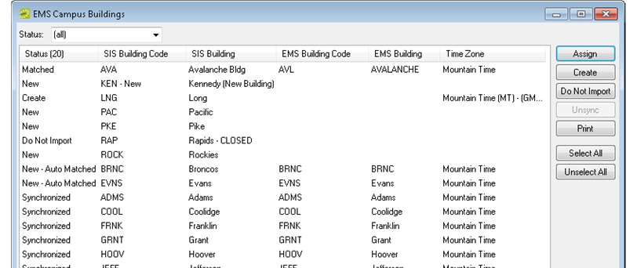

Synchronize Facility Data
You must synchronize your facility data in the following order:
- Buildings
- Room Types
- Rooms
The synchronization process does not update existing facility records after they have been imported and linked. For example, if a room’s code, description, or capacity is changed in the SIS after it has been imported and linked, this information is not changed in the {{product}} database.
Synchronizing Buildings
When you synchronize buildings, the values for Building Code and Description in the SIS are used for any new buildings that are configured in your {{product}} database. You can edit these values if needed in {{product}}. (See Configuring Buildings.)
- On the {{product_campus}} menu bar, click Academic Planning > Configuration > Synchronize Buildings. The {{product_campus}} Building window opens.

- Set the status of the imported buildings (New - Auto Matched, Matched, Create, or Do Not Import) as described in Facility data synchronization. A window opens that requires you to select a time zone for the referenced buildings.
- Select the correct time zone, and then click Close to return to the {{product_campus}} Buildings window.
- Click Process. A message opens indicating that the buildings were successfully processed.
- Click OK to close the message and return to the {{product_campus}} Buildings window.
- Click Cancel or Close (x) to close the window.
Synchronizing Room Types
- On the {{product_campus}} menu bar, click Academic Planning > Configuration > Synchronize Room Types. The {{product_campus}} Room Types window opens.

- Set the status of the imported room types (New - Auto Matched, Matched, Create, or Do Not Import) as described in Facility data synchronization.
- Click Process. A message opens indicating that the room types were successfully processed.
- Click OK to close the message and return to the {{product_campus}} Room Types window.
- Click Cancel or Close (x) to close the window.
Tip: After you have synchronized the room types, you can edit the names as needed. See “Configuring Room Types”.
Synchronizing Rooms
Before you can synchronize room data, at least one setup type must be configured in your {{product}} database (for example, academic setup), or the synchronization process cannot correctly import the room capacity. To configure a setup type, or confirm that one already has been configured in your {{product}} database, see Configuring Setup Types. After you have configured or confirmed this setup type, set the value for the following {{product}} system parameter (Area: Campus, Description: Default Setup Type) to this setup type. See Editing System Parameters.
- On the {{product_campus}} menu bar, click Academic Planning > Configuration > Synchronize Rooms. The {{product_campus}} Rooms window opens.

- Set the status of the imported rooms (New - Auto Matched, Matched, Create, or Do Not Import) as described in Facility data synchronization.
- Click Process. A message opens indicating that the rooms were successfully processed.
- Click OK to close the message and return to the {{product_campus}} Rooms window.
- Click Cancel or Close (x) to close the window.
Tip: After you synchronize the rooms, you can edit the names as needed. See To configure one room at a time.